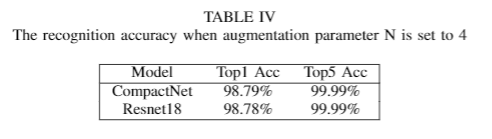
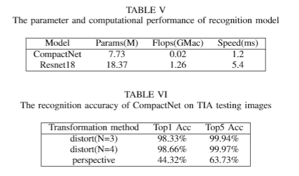

Model Performance
- The compact network used in our work get high accuracy and convergence with only 200 epochs in the training stage. And we compare the compact model with the traditional deep CNN model, such as Resnet family.
- We find that the compact model has same level recognition accuracy compared to the regular deep CNN network, the result is shown in table 4.
- In the table 5, we find the size of compact network is much smaller than the deep CNN. And the inference speed of compact network also exceeds the deep CNN significantly.
- We evaluate the robustness of the model on the distortion test dataset. The table 6 shows that the compact recognition model still has high accuracy to recognize irregular character images.
 